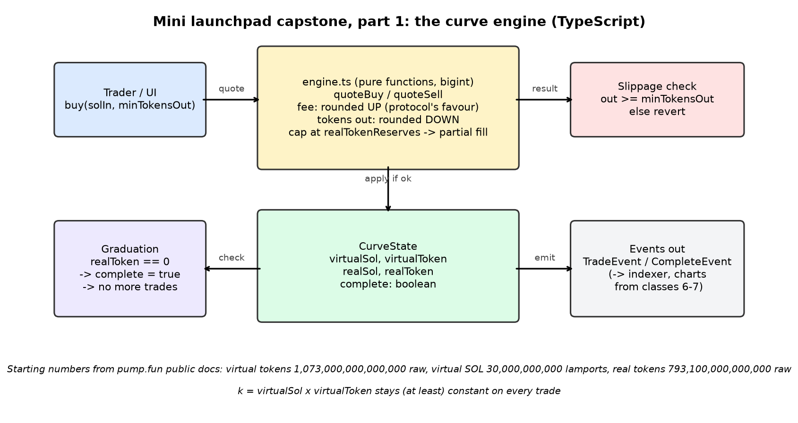

Part 9.1 · Capstone part 1
Capstone 1: the curve engine
From now on, you build. Part 1 is a small TypeScript engine that quotes and applies buys and sells on a virtual-reserve curve, starting from pump.fun's real launch numbers.
1 Everyday analogy
Mama Nkechi has three snacks left, and a customer asks for ten. She has two choices. She can refuse the sale completely, or she can sell him the three she has, charge him only for those three, and give back the rest of his money. The moment the last snack leaves the tray, she flips her sign to "SOLD OUT", and nothing more is sold from that tray.
2 Design question
The curve is nearly sold out, with only a few tokens left in realTokenReserves. A big buy arrives, and the math says the buyer would get more tokens than are left.
(1) Should your engine reject the whole trade, or sell what's left and refund the extra SOL? (2) At what exact moment does the curve become complete?
Try to answer on your own first, in plain English. A gut answer is fine.
Reveal answer
(1) Our clone sells what's left General pattern / our clone. It caps tokensOut at realTokenReserves and prices only those tokens, so the buyer pays less and there's nothing to refund afterwards. The quote is marked partial: true so the UI can say so. Rejecting would also be safe, but the curve could then get stuck a few tokens short of completing. Meteora DBC has an explicit PartialFill swap mode for this case Real: Meteora DBC repo.
(2) It completes at the end of the buy that takes realTokenReserves to exactly 0. That matches pump.fun's documented rule Real: pump.fun docs. After that, every buy and sell throws CurveComplete.
3 Simple explanation
The engine is pure: no network, no Solana, just bigint math on a Curve object. That makes it easy to test, and it means the same file can run in the program simulator, the API (for quotes), and the browser (for previews).
quoteBuy/quoteSellonly compute. They never change state.applyBuy/applySellcheck slippage first, then update both virtual and real reserves together.- Every division rounds in the protocol's favour (chapter 2).
4 The math
Partial fill near the end:
Worked check from the tests: after buying 793,000,000 tokens, a buy of 50,000,000 tokens is filled with only the 100,000 that are left, and the curve completes.
5 TypeScript code
// Capstone part 1 — the curve engine (OUR CLONE'S DESIGN, not pump.fun's source code).
// Starting numbers are pump.fun's public Global defaults (raw units, 6-decimal tokens assumed).
export const LAMPORTS_PER_SOL = 1_000_000_000n;
export const TOKEN_DECIMALS = 6n; // assumption used throughout the book
export const FEE_BPS = 100n; // pump.fun's public docs: fee_basis_points == 100 (1%)
export const BPS = 10_000n;
export interface Curve {
virtualTokenReserves: bigint;
virtualSolReserves: bigint;
realTokenReserves: bigint;
realSolReserves: bigint;
tokenTotalSupply: bigint;
complete: boolean;
}
export function newCurve(): Curve {
return {
virtualTokenReserves: 1_073_000_000_000_000n,
virtualSolReserves: 30_000_000_000n,
realTokenReserves: 793_100_000_000_000n,
realSolReserves: 0n,
tokenTotalSupply: 1_000_000_000_000_000n,
complete: false,
};
}
/** ceil(a / b) for positive bigints — round UP when the user pays. */
export const ceilDiv = (a: bigint, b: bigint): bigint => (a + b - 1n) / b;
/** Fee is always rounded UP (in the protocol's favour). */
export const feeOf = (amount: bigint, bps = FEE_BPS): bigint => ceilDiv(amount * bps, BPS);
/** Tokens out for an exact SOL input (before any cap). Rounded DOWN: the user receives. */
export function tokensForSol(c: Curve, solIn: bigint): bigint {
return (c.virtualTokenReserves * solIn) / (c.virtualSolReserves + solIn);
}
/** SOL cost (before fee) for an exact token output. Rounded UP: the user pays. */
export function solForTokens(c: Curve, tokensOut: bigint): bigint {
if (tokensOut >= c.virtualTokenReserves) throw new Error("tokensOut too large");
return ceilDiv(c.virtualSolReserves * tokensOut, c.virtualTokenReserves - tokensOut);
}
/** SOL out (before fee) for selling tokens. Rounded DOWN: the user receives. */
export function solForSell(c: Curve, tokensIn: bigint): bigint {
return (c.virtualSolReserves * tokensIn) / (c.virtualTokenReserves + tokensIn);
}
export interface BuyQuote { tokensOut: bigint; solCost: bigint; fee: bigint; total: bigint; partial: boolean }
/**
* Quote a buy of an exact token amount (pump.fun-style `buy(amount, max_sol_cost)` shape).
* Our clone's rule for the end of the curve: if amount > realTokenReserves we sell what is left
* (partial fill) — the user only pays for what they get, so nothing needs refunding later.
*/
export function quoteBuy(c: Curve, amount: bigint): BuyQuote {
if (c.complete) throw new Error("CurveComplete");
if (amount <= 0n) throw new Error("ZeroAmount");
const tokensOut = amount > c.realTokenReserves ? c.realTokenReserves : amount;
const solCost = solForTokens(c, tokensOut);
const fee = feeOf(solCost);
return { tokensOut, solCost, fee, total: solCost + fee, partial: tokensOut < amount };
}
/** Apply a buy. Reverts (throws) before touching state if slippage is exceeded. */
export function applyBuy(c: Curve, amount: bigint, maxSolCost: bigint): BuyQuote {
const q = quoteBuy(c, amount);
if (q.total > maxSolCost) throw new Error(`ExceededSlippage: needs ${q.total} > max ${maxSolCost}`);
c.virtualTokenReserves -= q.tokensOut;
c.realTokenReserves -= q.tokensOut;
c.virtualSolReserves += q.solCost;
c.realSolReserves += q.solCost;
if (c.realTokenReserves === 0n) c.complete = true; // the exact moment the curve completes
return q;
}
export interface SellQuote { solOut: bigint; fee: bigint; net: bigint }
export function quoteSell(c: Curve, amount: bigint): SellQuote {
if (c.complete) throw new Error("CurveComplete");
if (amount <= 0n) throw new Error("ZeroAmount");
const solOut = solForSell(c, amount);
if (solOut > c.realSolReserves) throw new Error("InsufficientRealSol");
const fee = feeOf(solOut);
return { solOut, fee, net: solOut - fee };
}
export function applySell(c: Curve, amount: bigint, minSolOutput: bigint): SellQuote {
const q = quoteSell(c, amount);
if (q.net < minSolOutput) throw new Error(`ExceededSlippage: gets ${q.net} < min ${minSolOutput}`);
c.virtualTokenReserves += amount;
c.realTokenReserves += amount;
c.virtualSolReserves -= q.solOut;
c.realSolReserves -= q.solOut;
return q;
}
/** Spot price in lamports per whole token, as a decimal string (display only). */
export function spotPriceLamportsPerToken(c: Curve): number {
return Number(c.virtualSolReserves * 10n ** TOKEN_DECIMALS) / Number(c.virtualTokenReserves);
}
/** Format raw bigint units with a fixed number of decimals, without floating point. */
export function fmt(raw: bigint, decimals: bigint): string {
const d = 10n ** decimals;
const whole = raw / d;
const frac = (raw % d).toString().padStart(Number(decimals), "0");
return `${whole.toLocaleString("en-US")}.${frac}`;
}Download: engine.ts · tested with npx tsx
import assert from "node:assert/strict";
import { newCurve, tokensForSol, solForTokens, quoteBuy, applyBuy, applySell, fmt, feeOf, LAMPORTS_PER_SOL } from "./engine.ts";
const c = newCurve();
// 1) 1 SOL in (ignoring fee) buys about 34,612,903.225806 tokens
const t1 = tokensForSol(c, LAMPORTS_PER_SOL);
console.log("1 SOL ->", fmt(t1, 6n), "tokens");
assert.equal(fmt(t1, 6n), "34,612,903.225806");
// 2) cost to buy all 793.1M real tokens
const all = solForTokens(c, c.realTokenReserves);
console.log("complete curve cost (before fee) ->", fmt(all, 9n), "SOL; with 1% fee ->", fmt(all + feeOf(all), 9n));
assert.ok(all > 85_005_000_000n && all < 85_006_000_000n);
// 3) 10M-token buy total = 285,042,334 lamports
const q = quoteBuy(c, 10_000_000_000_000n);
console.log("10M tokens -> cost", q.solCost, "fee", q.fee, "total", q.total);
assert.equal(q.solCost, 282_220_132n);
assert.equal(q.fee, 2_822_202n);
assert.equal(q.total, 285_042_334n);
// 4) slippage: Alice's quote is stale after someone buys ahead of her
const c2 = newCurve();
const aliceQuote = quoteBuy(c2, 10_000_000_000_000n);
applyBuy(c2, 100_000_000_000_000n, 10n ** 12n); // a 100M-token buy lands first
assert.throws(() => applyBuy(c2, 10_000_000_000_000n, aliceQuote.total), /ExceededSlippage/);
// 5) partial fill at the end + completion moment
const c3 = newCurve();
applyBuy(c3, 793_000_000_000_000n, 10n ** 12n);
const last = applyBuy(c3, 50_000_000_000_000n, 10n ** 12n);
assert.equal(last.partial, true);
assert.equal(last.tokensOut, 100_000_000_000n);
assert.equal(c3.realTokenReserves, 0n);
assert.equal(c3.complete, true);
assert.throws(() => quoteBuy(c3, 1n), /CurveComplete/);
// 6) round-trip can never profit (rounding favours the protocol)
const c4 = newCurve();
for (let i = 0; i < 1000; i++) {
const b = applyBuy(c4, 1n, 10n ** 12n);
const s = applySell(c4, 1n, 0n);
assert.ok(s.net <= b.total);
}
assert.ok(c4.realSolReserves >= 0n);
console.log("after 1000 tiny round trips, curve kept", c4.realSolReserves, "lamports (never negative)");
console.log("engine: all checks passed");Download: engine.test.ts · tested with npx tsx
1 SOL -> 34,612,903.225806 tokens
complete curve cost (before fee) -> 85.005359057 SOL; with 1% fee -> 85.855412648
10M tokens -> cost 282220132n fee 2822202n total 285042334n
after 1000 tiny round trips, curve kept 1000n lamports (never negative)
engine: all checks passed6 TypeScript exercise
Add an exact-SOL-in buy: applyBuyExactSolIn(curve, solIn, minTokensOut). Take the fee out of solIn first, compute the tokens, and cap them at realTokenReserves. If you cap, compute the SOL actually used and return a refund. Test that used + fee + refund === solIn, and that the curve completes.
Show a solution
export function applyBuyExactSolIn(c: Curve, solIn: bigint, minTokensOut: bigint) {
if (c.complete) throw new Error("CurveComplete");
const feeMax = feeOf(solIn);
let tokens = tokensForSol(c, solIn - feeMax);
if (tokens > c.realTokenReserves) tokens = c.realTokenReserves;
if (tokens < minTokensOut) throw new Error("ExceededSlippage");
const used = solForTokens(c, tokens); // round up
const fee = feeOf(used); // round up
const refund = solIn - used - fee; // >= 0 because used <= solIn - feeMax
c.virtualTokenReserves -= tokens; c.realTokenReserves -= tokens;
c.virtualSolReserves += used; c.realSolReserves += used;
if (c.realTokenReserves === 0n) c.complete = true;
return { tokens, used, fee, refund };
}This exact code is tested in code/exercises.test.ts: 200 SOL sent into a nearly-sold-out curve fills the remaining tokens, refunds the rest, and completes the curve.
7 Architecture diagram

